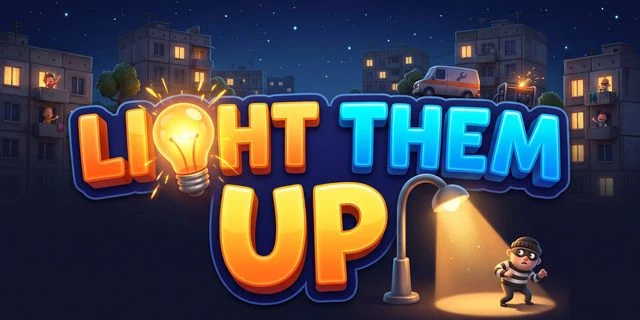

Zadovoljstvo raste dok kuća noću neprekidno ima svetlo, a pada kad ostane u mraku. Zadovoljniji stanari plaćaju više.
Park traži fenjer. Ulična lampa u parku čini stanare nesrećnim.
Svetiljka i sijalica su odvojene. Svetiljka (Ulična LED, Klasični stub, Fenjer) određuje stil i boju svetla. Sijalica određuje jačinu: LED čip (skup, troši kao štedljiva a svetli jače, dugo traje), Štedljiva (manji domet, malo struje, duže traje), Obična, Jaka (veći domet, više struje). Izgorelu sijalicu menjaš sama, bez nove svetiljke.
Stari kvart (novi plac) voli klasično, toplo svetlo: klasični stub ili fenjer. Modernu LED svetiljku tamo ne vole.
Banda ima bazu na levoj ivici mape i ide rutama (crvene isprekidane linije). Gde ih oteraš, taj deo im je zatvoren 2 noći i idu obilaznim putem. Oteraj ih 3 puta na istom mestu i tu se zauvek isele.
Lopovi (žute oči) dolaze od 2. noći i idu ka mračnim kućama i kolima. Oko njih se puni krug dok obijaju. Ako ih svetlo uhvati ili ih dodirneš, dobijaš +20 $ (i vraćaš ukradeno). Ako uspeju, gubiš novac, a stanari su nezadovoljni.
Velika noć je svaka 5. noć: banda i lopovi napadaju duplo jače, a mapa svetli crveno. Ako do zore bude najviše 5 razbijenih lampi, dobijaš veliku nagradu.
Preopterećenje: generator može do 110%. Na 85–100% (narandžasto) brže se troši i zuji. Preko 100% (crveno, lampica na generatoru treperi) povremeno iskoči osigurač i nastane mrak na 5–8 sekundi. UPS baterija tad drži svetla 15 s. Solarni paneli (posle starog kvarta) daju +20 struje i jeftiniju struju.
Saobraćaj: kola voze ulicama. U mraku usporavaju i pale duga svetla, a na huligana zatrube i uplaše ga. Kad auto noću prođe kroz dobro osvetljenu ulicu, dobijaš +2 $ putarine.
Auto-dispečing (250 $): servis sam kreće na razbijene i izgorele lampe kad imaš para. Kredit: +200 $ odmah, a vraćaš 245 $ po 35 $ svake zore.
Gradski tender (od 3. noći): zadatak na 3 dana (park sa fenjerima, LED čip lampe, osvetljen kvart, noći bez krađe) sa velikom isplatom. Reputacija raste sa dobrim noćima, a pada sa krađama i propalim misijama. Viša reputacija daje jeftiniju struju (do −20%) i veće tendere.
Više struje: stari kvart donosi mali generator (+16). Kad je generator na maksimumu, u Prodavnici kupuješ trafostanice (+24 svaka, do 3).
Noćne misije od 2. noći: svake noći jedan zadatak (uhvati lopove, oteraj huligane, sačuvaj označenu kuću, bez razbijenih lampi, generator ispod 86%). Uspeh donosi veliku nagradu, neuspeh kaznu. Zadatak piše ispod mape.
Nova banda dolazi 3 noći posle iseljenja stare: jača je, manje se plaši svetla i gađa iz daljine. Od 3. noći generator ponekad štuca i par sekundi daje pola struje.
Bes raste kad ih teraš. Kad bes pređe 50%, dolaze u osvetu, po dvojica i jači. Prisustvo pada svaki put kad ih oteraš, a raste kad razbiju lampu. Kad prisustvo padne ispod 8%, banda se seli iz kvarta.
Vreme od 3. noći: magla skraćuje domet lampi za 25% i lopove je teže uočiti. U oluji lampe ispod 50% veka ili oštećene od kamenica mogu da izgore od kratkog spoja.
Godišnja doba prate pravi kalendar: zimi je noć duga (95 s), a leti kratka (60 s). Zimi pada sneg (domet −15%, kombiji sporiji), u proleće i jesen kiša (domet −12%) i magla, a leti oluje.
Senzor pokreta (30 $, za jednu lampu): lampa tinja i ne troši struju dok niko ne priđe, a kad naiđe huligan, odmah se upali i otera ga. Ojačano staklo (25 $): svetiljka trpi duplo više kamenica.
Trafika i stajalište noću donose stalan bonus ako su osvetljeni, ali su omiljena meta lopova i huligana.
Reputacija 75+: grad daje subvenciju (LED čip 15% jeftiniji), a stanari javljaju čim lopov uđe u kvart.
Plate: svaki dodatni kombi (+20 $) i nivo bržih majstora (+10 $) se plaćaju svake zore. Skupa tarifa: neke noći struja košta 40% više, najavi se kad padne mrak. Auto-dispečing možeš da isključiš kad štediš. Tender daje avans odmah, ali ako ne uspeš plaćaš penal.
Reputacija u zvezdicama: ★★ (25) stanari plaćaju 5% više, ★★★ (50) tenderi +15%, ★★★★ (75) LED čip −15% i dojave stanara, ★★★★★ (90) grad daje +60 $ svake zore i popravke su 20% jeftinije.
Nove zone u Prodavnici: Industrijska zona (fabrike plaćaju +60%, vole Uličnu LED) i Centar · Šetalište (+40%, vole fenjere i klasične stubove).
Dizalica duplo ubrzava montažu uličnih stubova. Obični majstori čekaju kad su huligani blizu, a oklopni kombi radi i pod kamenicama. Toplotna mapa (Prodavnica ili taster H) boji kuće po zadovoljstvu.
Popravi / zameni sve (Prodavnica): jednim dodirom šalje servis na sve razbijene, izgorele i istrošene lampe.
Ista boja svetla u celom kvartu (sve toplo ili sve hladno) daje +25% prihoda.
Reflektor (dugme ispod mape): dodirni ga, pa dodirni mesto gde huligani dolaze. Radi odmah, bez servisa, i svetli do zore. Ne broji se u osvetljenost.
Patrola: vozilo obiđe ceo kvart i usput tera huligane. Posle kruga 30 sekundi nema huligana. Radi samo noću.
Noću stanari plaćaju za svetlo, a generator troši malo struje. Danju daju još dnevnicu za dobru noć, a popravke su upola jeftinije. U zoru dobiješ izveštaj gde je otišao novac.
Oterano: 0Razbijeno: 0Huligana: 0
👆

Tvoj grad
Upiši mesto ili deo grada, ili uzmi svoju lokaciju. Igra preuzme prave ulice i napravi kvartove. Treba internet.
Nasledio si kvart u Borči. Generator zuji, a lampe su skoro sve ugašene. Stanari plaćaju kad im je noću svetlo i kad im se lampe sviđaju.
Najlakše: prevuci svetiljku prstom iz donje trake na mapu i pusti je bilo gde pored ulice ili u parku. Isprekidani krugovi su samo predlozi. Radar pokaže koliko svetla dobijaš.
Ili izaberi svetiljku dole, a dugmetom Sijalica jačinu (štedljiva, obična, jaka). Dodirni prazno mesto. Radar pokaže dokle svetli, gde se preklapa (crveno) i da li će se stanarima svideti. Dodirni ponovo da je postaviš.
Dodirni razbijenu ili izgorelu lampu i servis ide na popravku. Izgorela lampa traži samo novu sijalicu. Danju je sve upola jeftinije.
Lice iznad lampe pokazuje raspoloženje stanara. Park traži fenjer, a stari kvart klasično toplo svetlo.
Zelena traka na kući je zadovoljstvo. Raste dok kuća svake noći ima svetlo, i tad stanari plaćaju više.
Ista boja svetla u kvartu (sve toplo ili sve hladno) daje +25% prihoda.
Huligani dolaze od 2. noći iz baze na levoj ivici, crvenim rutama. Dodirni crvene oči za +5 $, ili ih oteraj svetlom. Gde ih oteraš, tuda više ne prolaze. Kad im padne prisustvo, banda se seli.
Reflektor (dugme ispod mape, 10 $): dodirni ga, pa dodirni mesto gde huligani dolaze. Svetli do zore i odmah ih tera, bez čekanja servisa.
Generator ima ispravnost u % (piše kod Struje). Najduže traje na 80–85% opterećenja, a na 100% se brzo troši. Servis je u Prodavnici. LED čip i Štedljiva troše najmanje struje.
Lopovi obijaju mračne stanove i kradu kola. Svetlo ih hvata, a možeš ih i dodirnuti: nagrada +20 $.
Kad se banda iseli, posle par noći dolazi nova, jača. Ponekad generator štuca i deo lampi se ugasi na nekoliko sekundi.